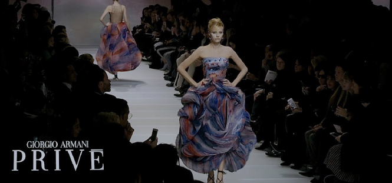

Armani, une marque italienne de luxe
C’est en 1975 à Milan que la marque Armani voit le jour.Née d’une alliance entre Giorgio Armani et son partenaire et compagnon Sergio Galeotti, la marque produit au départ du prêt-à-porter masculin
.
Leur Première collection masculine fait beaucoup parler d'elle avec notamment une veste révolutionnaire, déstructurée et sans doublure, qui déchaîne les passions et sera adaptée quelques mois plus tard à la femme.Fort de ce succès, Armani crée une deuxième ligne en 1981, plus jeune et plus accessible : la ligne Emporio Armani.
S’en suivent alors une série de lignes de vêtements toutes plus luxueuses et élégantes les unes que les autres, mais visant à une clientèle cible. Armani se fait remarquer en habillant des vedettes de cinéma, dont Gwyneth Paltrow, Jodie Foster ou encore Richard Gere.C’est aussi dans le début des années 80 qu’il signe ses premiers parfums, en collaboration avec L'Oréal.
De cette alliance naîtront Armani pour femme et Armani pour homme, les deux premières fragrances d’une longue série.Le créateur lancera plusieurs autres créations, comme Acqua Di Gio par exemple— sa version pour homme est aujourd’hui un des parfums les plus vendus au monde.
Outre ses collections de vêtements et de parfums, la marque Armani opte pour la diversification de ses activités et se lance dans le domaine des cosmétiques, des accessoires et des bijoux, sans oublier une ligne d'ameublement d'intérieur et un premier restaurant en 1989. L’ascension et la diversification sont fulgurantes pour la maison Armani. Cet empire du style construit par un seul homme est à présent de taille colossale.